親鸞聖人大立像/新潟県中条町
新潟市街から北東に車を走らせる事１時間。国道345号線は海沿いの割には防風林ばかりで殺風景な道である。
その何もない道沿いにいきなり巨大な人のシルエットが現れ道行く人の肝を潰してくれている。
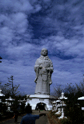 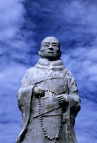
それは御身丈40メートルの親鸞さんである。これはかなり意表を突いた佇まいだった。
普通この手の巨大人体型建造物といえば観音様と相場は決まっているのだが、ここのは親鸞さんなのである。
大観音とか大仏ってゆーのは信仰の対象そのものであるからそれを巨大化させることはまあ、ＯＫなんだけど、坊さんをデカく作るっていうのはその坊さん自体が信仰の対象としての偶像になってるって事なのかあ？
でもそういえば弘法大師の巨大立像なんかは全国に結構あるから、親鸞さんのファンクラブみたいなモノ
なのだろうと思いつつ看板を見れば、果たして「宗教法人 越後の里親鸞聖人」とある。やっぱり
で、その親鸞さんなのだが、通常の大観音（大観音自体が通常でないという話もあるが）に比べるとかなり趣きの違いが感じられる。
そもそも観音様はそれ自体がある程度のコンセンサスを持っているので、一目見れば（日本＆東アジアの人ならば）それが何なのかすぐに了解する事ができる。
しかしこの親鸞さんの立像は知らない人が見たらまず何の像なのか良く判らない。袈裟着てるから坊さんだというのは判るけど、看板を見て初めて親鸞さんなんだ、と判る具合である。従って初めて眼にした時のインパクトは後者の方が強い。見慣れてないし正体が判らないから。
で、しかも観音様と違って700年程昔の人物とはいえ実存の人間が巨大化しているので生々しい。しかもきっちり日本人。
その親しみ易さが逆に生々しさに追い討ちをかけ、さらにインパクトを強めている。
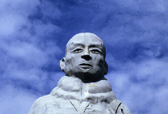 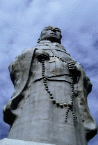
特に生々しいのはなんといっても顔である。親鸞さん、随分タレ眼だったようである。そしてちょっと王監督入ってます。そしてその深いヒトミの奥には人々の幸せを願う優しいココロが・・・ってチョット待て！ヒトミの奥には人がいるじゃないかあ！
・・・そう、この親鸞聖人大立像、親鸞さんの眼の部分まで登れるようになっているのである。そして眼の部分は穴が開いていて内側から覗けるようになっていたのである。
というわけで中に入ってみる。
八角形の台座の部分から入ると、本堂スペース。正面に本尊阿弥陀如来の仏画がまつられている。横には小さな文字が寄せ集まって南無阿弥陀仏の文字を形作る渋い掛け軸が。
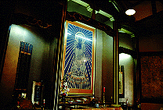 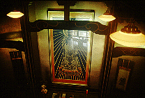 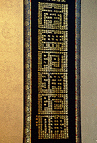
で、右にまわると二階への階段。映画「親鸞」のポスターがあちこちに貼ってある。
二階は親鸞さん関係のギャラリー。聖人直筆の書や聖人絵巻などファンには堪らない逸品ぞろい。
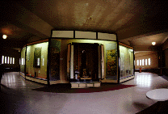 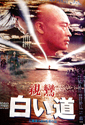
で、そこから上がいよいよ聖人胎内潜り。その前に台座屋上に出て聖人像を足下から見上げてデカさを確認しておこう。
胎内は螺旋階段で途中途中フロアが設けられている。しかしそこは何かに使用されている訳でなくただフロアがあるだけといった状態。ここは暫定的に使用されている感じで照明は裸電球のみで壁のペイントも完成したとは云い難い。きっと将来はここに仏像なんかが置かれるのだろう。
それにしても上に行けば行く程、鳩の糞が目立って来る。途中幾つかあった覗き窓にも必ず窓を閉めるよう、との内容の貼紙がしてあった。なんかだんだん廃虚っぽくなってきたぞ。
階段がだんだん狭くなってきて、ついに手摺がむき出しの鉄筋に工事用のロープというあたりでようやく頂上の眼の展望部分に着く。祭壇がぽつんと置かれたそのスペースは工事中のビルに仏壇が置かれているようなシュールな光景だった。
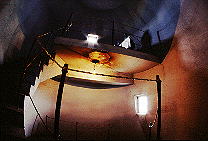 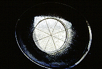
早速、親鸞聖人との視線を共有すべく眼の部分の穴から外を覗く。穴には鳩が入れないように金網が架けられていた。良く見ればそれは100円ショップなんかで売ってそうなステンレスのザルだった
・・・いいのかそれで。
ちなみに聖人大立像が完成したのは平成2年、バブル絶頂！って感じですかねえ。時期的には。
1999.10
追記；現在内部拝観は出来ません。2022.01.記
珍寺大道場 HOME